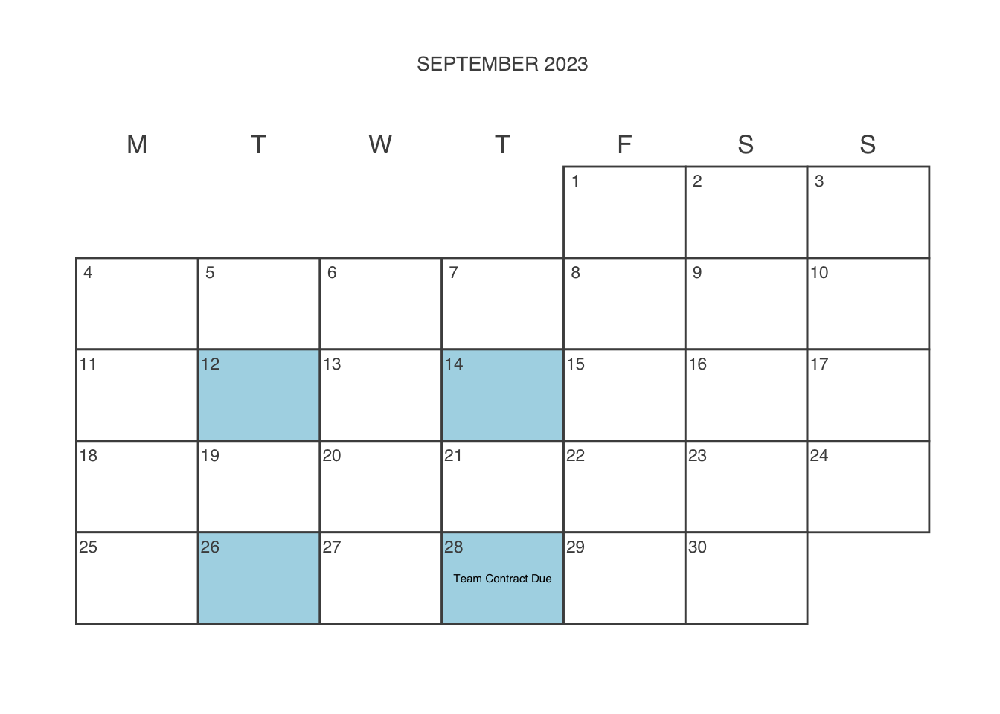
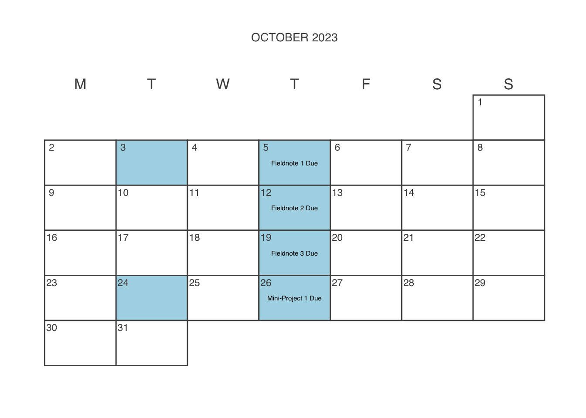

Schedule
Styling and infrastructure for this page inspired by related syllabi produced by Ben Baumer and R. Jordan Crouser.
All readings for this course will be available in our course Perusall, which is linked in Moodle. I encourage you to complete the readings there so that you can leave comments and questions as they come up.


September 07, 2023
Introductions
Fill out the First Day of Class Questionnaire
Course slides are here.
September 12, 2023
Hegemonic Backdrops of Big Data
Elish, M. C. and danah boyd (2018). “Situating Methods in the Magic of Big Data and AI”. In: Communication Monographs 85.1, pp. 57-80. (Visited on Sep. 01, 2023). Read in Perusall
Fill out the Trigger Warnings Questionnaire in Moodle.
Install Desktop version of Slack and configure notifications for our course.
Create and share Labor Log
Course slides are here
boyd, danah and Kate Crawford (2012). “Critical Questions for Big Data”. In: Information, Communication & Society 15.5, pp. 662-679. (Visited on Jan. 19, 2018).
Kitchin, Rob (2014). “Big Data, new epistemologies and paradigm shifts”. En. In: Big Data & Society 1.1, p. 2053951714528481. (Visited on Jul. 16, 2019).
Leonelli, S. (2014). “What difference does quantity make? On the epistemology of Big Data in biology:”. En. In: Big Data & Society. Publisher: SAGE PublicationsSage UK: London, England. (Visited on Mar. 28, 2020).
Onuoha, Mimi (2016). The Point of Collection. En. (Visited on Aug. 20, 2021).
September 14, 2023
Metaphors of Big Data
Levy Karen, Tim Hwang (2015). ‘The Cloud’ and Other Dangerous Metaphors. En. Section: Technology. (Visited on Aug. 29, 2021). Read in Perusall
Puschmann, Cornelius and Jean Burgess (2014). “Metaphors of Big Data”. En. In: International Journal of Communication 8.0, p. 20. (Visited on May. 02, 2016). Read in Perusall
Create a GitHub account if you don’t have one
Click on the Student Portfolio GitHub Repo in Moodle to create your portfolio
Create and share Labor Log if you haven’t
Sign-up to take class notes for community labor
Acknowledge that you’ve read and understand the grading contract by completing the Grading Contract Acknowledgement in Moodle
September 19, 2023
Binary Oppositions in Big Data Discourse
Complete course infrastructure set-up by following instructions here. Please note that the instructions in your individual repo are outdated. The video links do not work. These links have been updated in the link I just posted.
Fill out CATME Survey (link sent to your email)
DM Professor if you’d like to lead a class discussion for enrichment
Course slides are here
September 21, 2023
Scheduling Workshop - Class on Zoom
Start working on Team Contract
Strategic Plan
Link to Group Project Repo (enter or select CATME group number)
September 26, 2023
Thick Data for Big Data
Fiore-Silfvast, Brittany (2014). Hacked Ethnographic Fieldnotes. En. (Visited on Feb. 18, 2021). Read in Perusall
Burrell, Jenna (2012). The Ethnographer’s Complete Guide to Big Data: Small Data People in a Big Data World. (Visited on Aug. 20, 2021). Read in Perusall
DM Professor if you’d like to lead a class discussion for enrichment
Join Group Project Repo (enter or select CATME group number)
Start working on Fieldnote 1
September 28, 2023
Ethnography in Data Land
Introduction , Biruk, Cal (2018). Cooking Data: Culture and Politics in an African Research World. Illustrated edition. Durham: Duke University Press Books. ISBN: 978-0-8223-7074-1. Read in Perusall
Team Contract Due
Continue working on Fieldnote 1
Course slides are here
October 03, 2023
Documenting Datasets
Gebru, Timnit, Jamie Morgenstern, Briana Vecchione, et al. (2020). “Datasheets for Datasets”. In: arXiv:1803.09010 [cs]. arXiv: 1803.09010. (Visited on Jan. 24, 2021). Read in Perusall
Continue working on Fieldnote 1
Course slides are here
Bender, Emily M. and Batya Friedman (2018). “Data Statements for Natural Language Processing: Toward Mitigating System Bias and Enabling Better Science”. In: Transactions of the Association for Computational Linguistics 6, pp. 587-604. (Visited on Aug. 20, 2021).
October 05, 2023
Ethnographies of Infrastructure
Star, Susan Leigh (1999). “The Ethnography of Infrastructure”. En. In: American Behavioral Scientist 43.3, pp. 377-391. (Visited on Feb. 18, 2016). Read in Perusall
Get approval for dataset
Fieldnote 1 Due
Start working on Fieldnote 2
Course slides are here
Lampland, Martha and Susan Leigh Star, ed. (2008). Standards and Their Stories: How Quantifying, Classifying, and Formalizing Practices Shape Everyday Life. 1 edition. Ithaca: Cornell University Press. ISBN: 978-0-8014-7461-3.
Ottinger, Gwen (2010). “Buckets of Resistance: Standards and the Effectiveness of Citizen Science”. En. In: Science, Technology, & Human Values 35.2, pp. 244-270. (Visited on Oct. 05, 2019).
Timmermans, Stefan and Steven Epstein (2010). “A World of Standards but not a Standard World: Toward a Sociology of Standards and Standardization*“. In: Annual Review of Sociology 36.1, pp. 69-89. (Visited on Oct. 16, 2014).
October 10, 2023
Autumn Recess
Work on semiotic analysis
Continue working on Fieldnote 2
Start working on Mini-Project 1
Be sure to get approval for the TED Talks you plan to view for Mini-Project 1.
October 12, 2023
Sorting Things Out: Cultural Analyses of Categories
Bowker, Geoffrey C. (1998). “The Kindness of Strangers: Kinds and Politics in Classification Systems”. En. In: Library Trends 47.2, pp. 255-292. (Visited on Oct. 14, 2019). Read in Perusall
Work on semiotic analysis
Fieldnote 2 Due
Start working on Fieldnote 3
Continue working on Mini-Project 1
Course slides are here
Link to Web Archive 1
Social Advocacy for Racial Classifications here
More recent docket here
Bowker, Geoffrey C. and Susan Leigh Star (1999). Sorting Things Out: Classification and Its Consequences. En. Cambridge, MA: MIT Press. ISBN: 978-0-262-52295-3.
Waterton, Claire (2002). “From Field to Fantasy: Classifying Nature, Constructing Europe”. En. In: Social Studies of Science 32.2, pp. 177-204. (Visited on May. 15, 2019).
Kirksey, Eben (2015). “Species: a praxiographic study”. Fr. In: Journal of the Royal Anthropological Institute 21.4, pp. 758-780. (Visited on Oct. 05, 2019).
October 17, 2023
Infrastructure Field Day
Work on stakeholder analysis
Continue working on Fieldnote 3
Continue working on Mini-Project 1
October 19, 2023
Data Ghost Work
Chapter 1 , Gray, Mary L. and Siddharth Suri (2019). Ghost Work: How to Stop Silicon Valley from Building a New Global Underclass. Illustrated edition. Boston: Mariner Books. ISBN: 978-1-328-56624-9. Read in Perusall
Work on stakeholder analysis
Fieldnote 3 Due
Continue working on Mini-Project 1
Course slides are here
Irani, Lilly (2015). Justice for “Data Janitors”. En-US. (Visited on Dec. 13, 2018).
Plantin, Jean-Christophe (2019). “Data Cleaners for Pristine Datasets: Visibility and Invisibility of Data Processors in Social Science”. En. In: Science, Technology, & Human Values 44.1. Publisher: SAGE Publications Inc, pp. 52-73. (Visited on Aug. 20, 2021).
Forsythe, Diana E. (1993). “The Construction of Work in Artificial Intelligence”. En. In: Science, Technology, & Human Values 18.4. Publisher: SAGE Publications Inc, pp. 460-479. (Visited on Aug. 20, 2021).
October 24, 2023
October 26, 2023
How Data Domesticates Us: Rituals for Data Cleaning
Ribes, David and Steven J Jackson (2013). “Data bite man: The work of sustaining a long-term study”. In: Raw data” is an oxymoron. Ed. by Lisa Gitelman. Cambridge, MA: MIT Press, pp. 147-166. Read in Perusall
Work on ritual analysis
Mini-Project 1 Due
Course slides are here
Bowker, Geoffrey C. (2000). “Biodiversity Datadiversity”. En. In: Social Studies of Science 30.5, pp. 643-683. (Visited on May. 14, 2014).
Walford, Antonia (2017). “Raw Data: Making Relations Matter”. En_US. In: Social Analysis 61.2. Publisher: Berghahn Journals Section: Social Analysis, pp. 65-80. (Visited on Aug. 20, 2021).
Pink, Sarah, Shanti Sumartojo, Deborah Lupton, et al. (2017). “Mundane data: The routines, contingencies and accomplishments of digital living”. En. In: Big Data & Society 4.1. Publisher: SAGE Publications Ltd, p. 2053951717700924. (Visited on Aug. 30, 2021).
October 31, 2023
Data Collection Rituals
Work on ritual analysis
Group evaluations open
Start working on Mini-Project 2
MP 1 Peer Review Submission open
Course slides are here
November 02, 2023
Cromwell Day
Work on ritual analysis
Start working on Fieldnote 4
Continue working on group evaluations
MP 1 Peer Review Submission close and assessment opens
Continue working on Mini-Project 2
November 07, 2023
Work on Group Project
Group Evaluations Due
Work on user guide
Continue working on Fieldnote 4
Continue working on Mini-Project 2
Continue working on Peer Review
November 09, 2023
Work on Group Project
Work on user guide
Fieldnote 4 Due
MP 1 Peer Review Submission Due
Continue working on Mini-Project 2
November 14, 2023
Institutional Incentives
Work on institutional analysis
Continue working on Mini-Project 2
Course slides are here
November 16, 2023
Economies of Data Production
Chapter 3 , Biruk, Cal (2018). Cooking Data: Culture and Politics in an African Research World. Illustrated edition. Durham: Duke University Press Books. ISBN: 978-0-8223-7074-1. Read in Perusall
Work on institutional analysis
Mini-Project 2 Due
Gerlitz, Carolin and Anne Helmond (2013). “The like economy: Social buttons and the data-intensive web”. En. In: New Media & Society 15.8. Publisher: SAGE Publications, pp. 1348-1365. (Visited on Aug. 30, 2021).
Beer, David (2015). “Productive measures: Culture and measurement in the context of everyday neoliberalism”. En. In: Big Data & Society 2.1. Publisher: SAGE Publications Ltd, p. 2053951715578951. (Visited on Aug. 29, 2021).
November 21, 2023
Mobilizing Data: Making Numbers Actionable
Ottinger, Gwen and Rachel Zurer (2011). New Voices, New Approaches: Drowning in Data. En-US. (Visited on Dec. 13, 2018). Read in Perusall
Work on discourse analysis
Course slides are here.
Pine, Kathleen H. and Max Liboiron (2015). “The Politics of Measurement and Action”. In: Proceedings of the 33rd Annual ACM Conference on Human Factors in Computing Systems. New York, NY, USA: Association for Computing Machinery, pp. 3147-3156. ISBN: 978-1-4503-3145-6. (Visited on Aug. 30, 2021).
Dourish, Paul and Edgar Gómez Cruz (2018). “Datafication and data fiction: Narrating data and narrating with data”. En. In: Big Data & Society 5.2. Publisher: SAGE Publications Ltd, p. 2053951718784083. (Visited on Apr. 05, 2021).
November 23, 2023
Thanksgiving Break
Work on discourse analysis
November 28, 2023
Mobilizing Data Otherwise: Citizen Science and Sensing
Gabrys, Jennifer, Helen Pritchard, and Benjamin Barratt (2016). “Just good enough data: Figuring data citizenships through air pollution sensing and data stories”. En. In: Big Data & Society 3.2. Publisher: SAGE Publications Ltd, p. 2053951716679677. (Visited on Mar. 28, 2020). Read in Perusall
Work on user guide
Start working on Mini-Project Revisions
Peer Review Submission Opens
Course slides are here.
Calvillo, Nerea (2018). “Political airs: From monitoring to attuned sensing air pollution”. En. In: Social Studies of Science 48.3, pp. 372-388. (Visited on Sep. 24, 2019).
Jalbert, Kirk and Abby J. Kinchy (2016). “Sense and Influence: Environmental Monitoring Tools and the Power of Citizen Science”. In: Journal of Environmental Policy & Planning 18.3. Publisher: Routledge _ eprint: https://doi.org/10.1080/1523908X.2015.1100985, pp. 379-397. (Visited on Aug. 30, 2021).
November 30, 2023
Data Activism and Advocacy
Liboiron, Max (2015). “Disaster Data, Data Activism : Grassroots Responses to Representing Superstorm Sandy”. En. In: Extreme Weather and Global Media. Ed. by Julia Leyda and Diane Negra. Taylor & Francis Group. (Visited on Aug. 27, 2019). Read in Perusall
Work on user guide
Continue working on Mini-Project Revisions
Start working on Fieldnote 5
Peer Review Submission Closes and Assessment Opens
Bruno, Isabelle, Emmanuel Didier, and Tommaso Vitale (2014). Statactivism: Forms of Action between Disclosure and Affirmation. En. SSRN Scholarly Paper ID 2466882. Rochester, NY: Social Science Research Network. (Visited on Dec. 18, 2018).
Milan, Stefania and Lonneke van der Velden (2016). “The Alternative Epistemologies of Data Activism”. In: Digital Culture & Society 2.2, pp. 57-74. (Visited on Jul. 16, 2019).
Currie, Morgan, Britt S Paris, Irene Pasquetto, et al. (2016). “The conundrum of police officer-involved homicides: Counter-data in Los Angeles County”. En. In: Big Data & Society 3.2, p. 2053951716663566. (Visited on Aug. 08, 2018).
December 05, 2023
Data Agnotology: Ignorance and Knowledge Gaps
mimimimimi (2021). On Missing Data Sets. original-date: 2016-02-03T16:30:28Z. (Visited on Aug. 20, 2021). Read in Perusall
Milan, Stefania and Emiliano Treré (2020). “The Rise of the Data Poor: The COVID-19 Pandemic Seen From the Margins”. En. In: Social Media + Society 6.3. Publisher: SAGE Publications Ltd, p. 2056305120948233. (Visited on Aug. 31, 2021). Read in Perusall
First Draft Due
Continue working on Mini-Project Revisions
Continue working on Fieldnote 5
Peer Review Assessment Due
Course slides are here
D’Ignazio, Catherine and Lauren F. Klein (2020). Data Feminism. Cambridge, Massachusetts: The MIT Press. ISBN: 978-0-262-04400-4.
December 07, 2023
Data and Algorithmic Power
Eubanks, Virginia (2018). “A Child Abuse Prediction Model Fails Poor Families”. In: Wired. (Visited on Mar. 28, 2019). Read in Perusall
Fieldnote 5 Due
Continue working on Mini-Project Revisions
Brayne, Sarah (2017). “Big Data Surveillance: The Case of Policing”. In: American Sociological Review 82.5. Publisher: SAGE Publications Inc, pp. 977-1008. (Visited on Aug. 18, 2021).
Christin, Angèle (2020). “The ethnographer and the algorithm: beyond the black box”. En. In: Theory and Society 49.5, pp. 897-918. (Visited on Aug. 31, 2021).
Seaver, Nick (2017). “Algorithms as culture: Some tactics for the ethnography of algorithmic systems”. En. In: Big Data & Society 4.2. Publisher: SAGE Publications Ltd, p. 2053951717738104. (Visited on Jan. 22, 2021).
December 12, 2023
Final Projects
Work on user guide revisions
MP Revisions Due
December 14, 2023
Final Projects
Final Project Due
Enrichment Due
Community Labor Due
Social Constructions of Expertise in Data Work
Chapter 2 , Biruk, Cal (2018). Cooking Data: Culture and Politics in an African Research World. Illustrated edition. Durham: Duke University Press Books. ISBN: 978-0-8223-7074-1. Read in Perusall
Work on stakeholder analysis
Continue working on Mini-Project 1
Course slides are here
Gieryn, Thomas F. (1999). Cultural Boundaries of Science: Credibility on the Line. En. University of Chicago Press. ISBN: 978-0-226-29261-8.